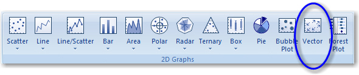
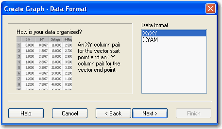
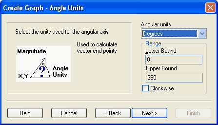
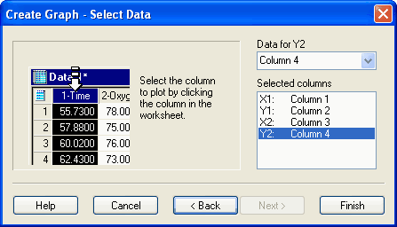

Creating a Vector Plot
To create a vector plot:
- Select the worksheet columns to plot before creating your graph by dragging the pointer over your data.
-
On the Create Graphs tab, in the
2D Graphs group, click
Vector.

-
In the Create Graph - Data Format
panel of the Graph Wizard, select one of the two available formats:
- XYXY. Select XYXY when you want both Start and End points of the graph appear as XY coordinates.
- XYAM. Select XYAM if you want the end points to be represented in terms of angle and magnitude. The XY point is the midpoint of the vector.
Figure 1. Selecting a Vector Plot Data Format If you select XYAM, when you click Next, the Create Graph - Angle Units panel appears.Figure 2. Selecting Vector Plot Angle Units for the XYAM Data Format Tip: You may need to scale the magnitude data if you are using the XYAM format and your vector magnitudes are either much larger or smaller than the X,Y coordinates. The vectors should be large enough to be clearly visible, but also small enough to be spaced within the X,Y coordinates so that they do not overlap.If, for example, the magnitudes are too large, use a Quick Transform to divide the magnitude column by a constant that is roughly the ratio of the largest magnitude to the smallest X and Y coordinate increment. Then you can easily adjust this constant to obtain a pleasing graph. For more information, see Performing Quick Transforms. -
Click Next. The
Create Graph - Select Data dialog box
appears.
Figure 3. Selecting Data for a Vector Plot  - When you have selected all the columns to plot, click Finish.